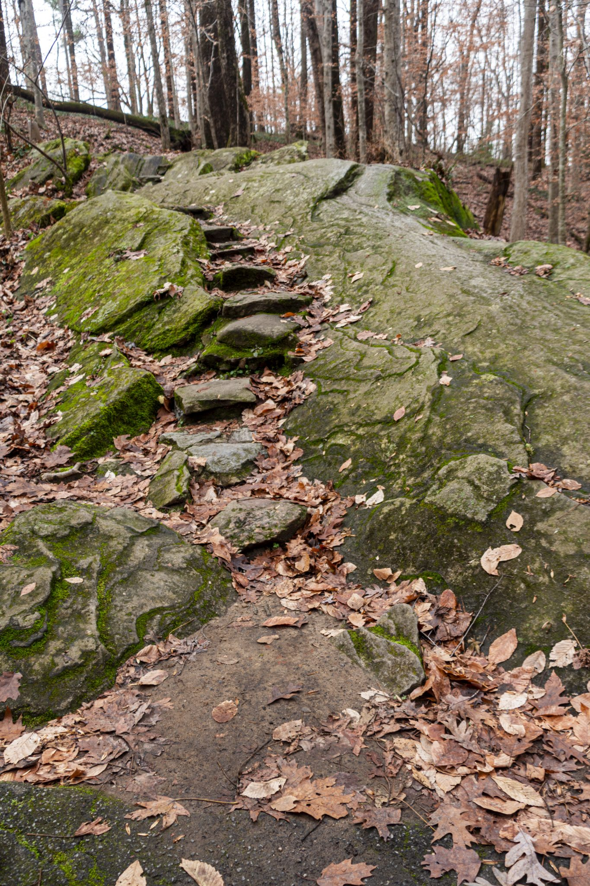

お店のこと
森と火と食をつなげるラボ
掲載記事では、LA PAGODE はこのように紹介されています。カフェ・ビストロ・ガストロノミーレストランとして機能する柔軟な場であり、佐渡の食材の新しい可能性を探る「食のラボ」でもあります。2022年、妙宣寺五重塔の目の前にオープンしました。掲載記事(2025年1月)より
営むふたり
お店は、ご夫妻で営まれています。掲載記事(2025年1月)より
ジル・スタッサール氏
フランス・ブルゴーニュ地方ヴェズレー村のご出身。フランスや中国などで、レストランのプロデュースに携わってこられました。シェフ、作家、編集者、写真家、現代美術アーティストとして活動されています。掲載記事(2025年1月)より
今井朋氏
群馬県のご出身。佐渡へ移る前は、群馬の「アーツ前橋」で学芸員を務めていました。掲載記事(2025年1月)より
2020年夏のお盆に家族旅行で佐渡を訪れたことが転機となり、2022年4月から、佐渡での暮らしを本格的に始められました。掲載記事(2025年1月)より
食材のこと
食材は、市場を通さず、生産者から直接仕入れているそうです。「半径5〜10km圏内で全ての食材との出会いが生まれる」と紹介されています。掲載記事(2025年1月)より
漁師が朝に獲った魚、農家が畑で採った野菜、山菜、果物、魚介、ジビエなど、季節の食材が並びます。掲載記事(2025年1月)より
森で採れるきのこ(タマゴタケ、ジロール茸、セップ茸など)を積極的に使うほか、裏庭では平飼いの鶏を育てているとのことです。掲載記事(2025年1月)より
料理の例は、記事(2025年1月)の時点のものです。季節によって変わります。


薪と、薪窯のこと
お店には、フランス製の薪窯が導入されています。薪の種類によって、火力と香りが変わるのだそうです。掲載記事(2025年1月)より
薪の保管・乾燥の作業場には、樹齢50年以上のナラの木を保有していると紹介されています。掲載記事(2025年1月)より
お店のInstagramのプロフィールにも、「森から薪を切り出し 薪から火を焚き」とあります。お店のInstagramプロフィールより
店内の雰囲気
お店を訪れた方の声を、ひとつ。
店内の雰囲気はヨーロッパ風で、暖かみがあり、居心地が良かったです。
メディア掲載
お店が掲載されている媒体です。
リンク先は各媒体のサイトです。掲載されている写真は、このページには転載していません。